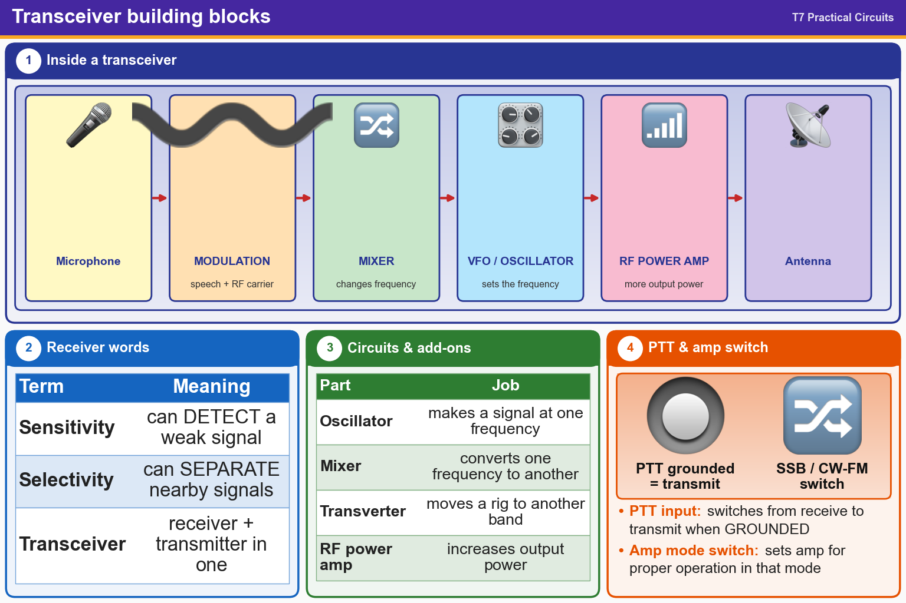

💡 Sensitivity = hearing weak signals. Selectivity = separating close signals. Mixer = changes frequency.
📚 Key words
- Transceiver
- Receiver + transmitter in one box.
- Sensitivity
- How well a receiver detects weak signals.
- Selectivity
- How well a receiver separates signals that are close together.
- Oscillator
- A circuit that makes a signal at one frequency. A VFO sets your receive and transmit frequency.
- Mixer
- Changes a signal from one frequency to another.
- Modulation
- Putting your voice onto the radio (RF) carrier wave.
- Transverter
- Converts a radio's signals to a different band.
- RF power amplifier
- Boosts transmit power. Its SSB/CW-FM switch sets it for the mode.
- PTT
- Push-To-Talk. Switches the radio to transmit when grounded.
Press Check on any question to see if you're right (it won't show the answer), or Grade at the bottom to grade the whole page.
T7A02
What is a transceiver?
✘A.A device for converting receiver and transmitter frequencies to another band
✔B.A device that combines a receiver and transmitter
✘C.A device for automatically sending and decoding Morse code
✘D.A device for matching feed line impedance to 50 ohms
T7A01
Which term describes the ability of a receiver to detect the presence of a signal?
✘A.RF gain
✘B.Total Harmonic Distortion
✔C.Sensitivity
✘D.Selectivity
T7A04
Which term describes the ability of a receiver to discriminate between multiple signals?
✔A.Selectivity
✘B.Sensitivity
✘C.Discrimination ratio
✘D.Harmonic distortion
T7A05
What is the name of a circuit that generates a signal at a specific frequency?
✘A.Reactance modulator
✘B.Low-pass filter
✔C.Oscillator
✘D.Phase modulator
T7A03
Which of the following is used to convert a signal from one frequency to another?
✔A.Mixer
✘B.Phase splitter
✘C.Amplifier
✘D.Inverter
T7A11
What is the function of the Variable Frequency Oscillator (VFO) circuit in a transceiver?
✔A.Set the receive and transmit frequency
✘B.Inject a variable frequency to allow CW reception
✘C.Generate and demodulate single sideband signals
✘D.Provide automatic frequency control
T7A08
Which of the following describes combining speech with an RF carrier signal?
✘A.Low-pass filtering
✘B.Oscillation
✘C.Impedance matching
✔D.Modulation
T7A06
What device converts the RF input and output of a transceiver to another band?
✔A.Transverter
✘B.Low-pass filter
✘C.High-pass filter
✘D.Phase converter
T7A10
What can be added to the output of a transceiver to increase the transmitted output power?
✔A.An RF power amplifier
✘B.A potentiometer
✘C.An impedance multiplier
✘D.All these choices are correct
T7A09
What is the function of the switch which selects either SSB or CW-FM on some VHF power amplifiers?
✘A.Change the frequency range of the amplifier to operate in the proper segment of the band
✔B.Set the amplifier for proper operation in the selected mode
✘C.Change the mode of the transmitted signal
✘D.Reduce the received signal noise
T7A07
What is the function of a transceiver’s PTT input?
✘A.Input for a key used to send CW
✔B.Switches transceiver from receive to transmit when grounded
✘C.Input for a preamplifier tuning tone
✘D.Provides a transmit tuning tone when grounded